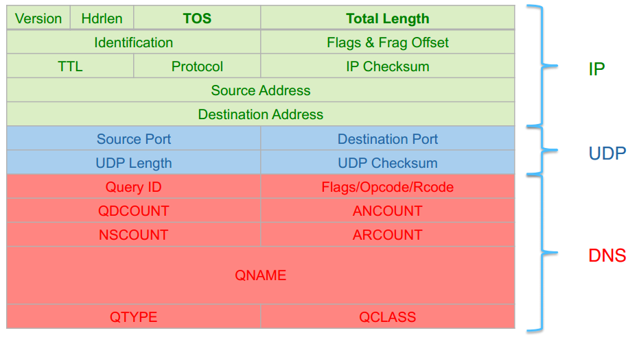
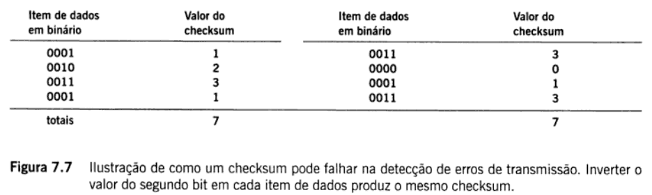

Created by
Psycho Mantys / @psycho_mantys
A checksum is a simple type of redundancy check that is used to detect errors in data.
A redundancy check is a number that is calculated from a file or a segment thereof and then appended to that file or segment for the purpose of comparing with a recalculation by another computer or at a later date in order to detect and correct errors that might occur during any phase of the storage or transmission of the file or segment.
The most simple types of redundancy checks are checksums.
Errors frequently occur in data when:
The errors are typically very small, for example, a single incorrect bit, but even such small errors can greatly affect the quality of data, and even make it useless.
IP, TCP and UDP protocols

Suppose the following block of 16 bits is to be sent using a checksum of 8 bits.
10101001 00111001
The numbers are added
10101001
00111001
-------------
Sum 11100010
Checksum 00011101 ; complemented
The pattern sent is 10101001 00111001 00011101
Now suppose the receiver receives the pattern sent in is:
10101001 00111001 00011101
When the receiver adds the three sections, it will get all 1s, which, after complementing, is all 0s and shows that there is no error.
10101001 00111001 00011101 Sum 11111111 Complement 00000000
Means that the pattern is OK.
Example of a checksum can fail to detect transmission errors: Invert the value of the second bit of each data item produces the same checksum.

By
Poliana Belo
Priscylla Silva / @killpiu
Psycho Mantys / @psycho_mantys